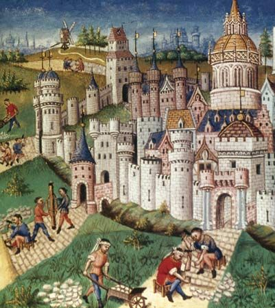

Historia Universal. Un viaje a la Edad Media
Un viaje a la Edad Media
2do Bachillerato General Unificado
Historia Universal
Área: Ciencias Sociales

¿Qué encontraremos en esta situación de aprendizaje?
En este recorrido por la Edad Media vamos a romper mitos e ideas equivocadas:
En el primer bloque veremos cómo nació la Edad Media tras la caída del Imperio Romano y qué papel tuvo la Iglesia y los monjes en la conservación del saber.
En el segundo bloque descubriremos la vida económica, las construcciones, las rutas comerciales y la política de la Edad Media.
En el tercer bloque nos adentraremos en la vida de las mujeres y caballeros medievales, con sus roles, aportes y valores.
Será un viaje de descubrimiento, debate y reflexión.